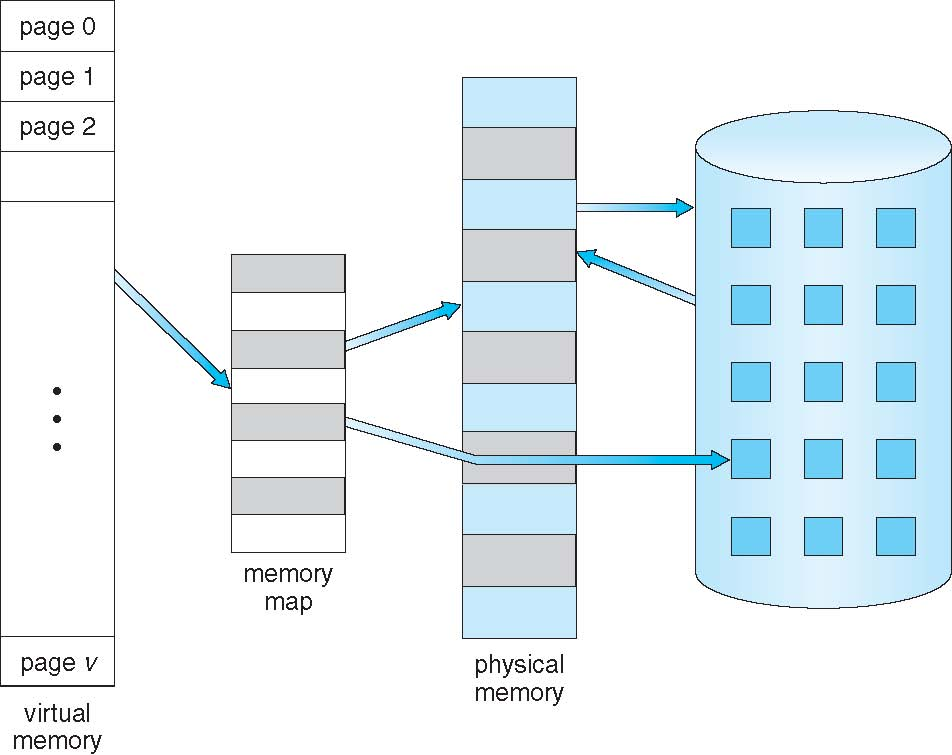

Virtual Memory
Sergey V. Ignatov
Created: 2018-12-06 Thu 13:00
Agenda
- Virtual Memory
- Memory Layout of Process
- Virtual Method Table
Virtual Memory
- Basic memory management
- Swapping
- Virtual Memory
- Page replacement algorithms
- Modeling page replacement algorithms
- Design issues for paging systems
- Implementation issues
- Segmentation
History
- Virtual Memory was developed in approximately 1959 - 1962, at the University of Manchester for the Atlas Computer, completed in 1962.
- in 1961, Burroughs released the B5000, the first commercial computer with Virtual Memory.
Virtual Memory Terminology
- Virtual Memory: A storage allocation scheme in which secondary memory can be addressed as though it were part of main memory. The addresses a program may use to reference memory are distinguished from the addresses the memory system uses to identify physical storage sites, and program-generated addresses are translated automatically to the corresponding machine addresses.
- Virtual Address: The address assigned to a location in Virtual Memory to allow that location to be accessed as though it were part of main memory.
- Virtual Address Space: The virtual storage assigned to a process.
- Address Space: The range of memory addresses avaliable to a process
- Real (Physical) Address: The address of a storage location in main memory
- Page: is a contiguous block of virtual addresses
- Frame: is a contiguous block of physical addresses
Memory Management
- Fundamental characteristics to memory management:
- All memory references are logical addresses that are dynamically translated into physical addresses at run time
- A process may be broken up into a number of pieces that don't need to be contiguously located in main memory during execution
- If these two characteristics are present, it is not necessary that all of the pages of segments of a process be in main memory during execution
Memory Management
- Goals:
- Provide a convenient programming model
- Efficiently allocate a scarce resource
- Protect programs from each other
- Protect the OS from programs
- Mechanisms:
- Physical and virtual addressing
- Paging and segmentation
- Page table management
- Policies:
- Page replacement algorithms
Virtual Memory
- Virtual Memory - separation of user logical memory from physical memory
- Only part of the program needs to be in memory for execution
- Logical address space can therefore be much larger than physical address space
- Allows address spaces to be shared by several processes
- Allows for more efficient process creation
- Programs use virtual addresses rather than real addresses to store instructions and data
- When the program is actually executed, the virtual addresses are converted into real memory addresses
- Virtual Memory can be implemented via:
- Demand paging
- Demand segmentation
Mapping Virtual to Physical Addresses
- OS must provide a mapping virtual addresses to physical addresses:
- The same virtual addresses in two different processes does not map to the same phusical address
- Some virtual addresses do not map to any physical address
Virtual Memory Implementation

Process Virtual Address Space
Process Address With Shared Library
Computer System Memory Hierarchy

Computer System Memory Hierarchy
- Levels of Memory Hierarchy
- Cache: small amount of fast, expensive memory
- L1 (Level 1) cache: usually on the CPU chip
- L2 & L3 cache: off-chip, made of SRAM (Static Random Access Memory)
- Main Memory: medium-speed, medium price memory (DRAM Dynamic Random Access Memory)
- Disk: many amount of slow, cheap, non-volatile storage
- Cache: small amount of fast, expensive memory
- Memory manager handles the memory hierarchy
Where Do Addresses Come From?
- Compile Time: The compiler generates the exact physical location in memory starting from some fixed starting position. The OS does nothing.
- Load Time: Compiler generates an address, but at load time the OS determines the process' starting position. Once the process loads, it does not move in memory.
- Execution Time: Compiler generates an address, and OS can move it around in memory as needed.
Page Faults
- When a page being referred to by the virtual address is not loaded as a page frame in to the memory, a page fault is occured which causes the CPU to trap the Operating System.
- The Operating System removes a page frame from the memory and loads the new page in to the freed location at the same time making appropriate changes to the page table.
- There are a page replacement algorithms available as The Optimal Page Replacement, The Not Recently Used Page Replacement, FIFO etc.
Memory Layout of Process
- A typical memory representation of a computer program consists of following sections:
- Text Segment
- Initialized Data Segment (Data)
- Uninitialized Data Segment (BSS)
- Memory Mapping Segment
- Stack
- Heap
Memory Layout of Process

Memory Layout of Process
- Each distinct type of content typically occupies one or several continuous blocks of memory within the virtual address space. The initial placement of these blocks is managed by the loader of the operating system, the content of these blocks is managed by the process owning them.
- Layout of the blocks that contain executable code and static data is determined by the compiler and does not change during process execution. The blocks that contain stack and heap change during process execution.
- The blocks containing the heap and the stack may need to grow as the process owning them executes. The need for growth is difficult to predict during the initial placement of the blocks. To avoid restricting the growth by placing either heap or stack too close to other blocks, they are typically placed near the opposite ends of the process virtual address space with an empty space between them. The heap block is then grown upwards and the stack block downwards as necessary.
Text Segment
- A Text Segment (Code Segment) is one of the sections of a program in an object file or in memory, which contains executable instructions.
- As a memory region, a text segment may be placed below the heap or stack in order to prevent heaps and stack overflows from overwriting it.
- Usually, the text segment is sharable so that only a single copy needs to be in memory for frequently executed programs, such as text editors, the C compiler, the shells, and so on. Also, the text segment is often read-only, to prevent a program from accidentally modifying its instructions
Initialized Data Segment (Data)
- Initialized Data Segment, usually called simply the Data Segment. A Data Segment is a portion of virtual address space of a program, which contains the global variables and static variables that are initialized by the programmer.
- Data Segment is not read-only, since the values of the variables can be altered at run time.
- This segment can be further classified into initialized read-only area and initialized read-write area.
- Examples:
static int i = 10;will be stored in data segment and globalint i = 10;will also be stored in Data Segment.
Uninitialized Data Segment (BSS)
- Uninitialized Data Segment, often called the "bss" segment, named after an ancient assembler operator that stood for "block started by symbol". Data in this segment is initialized by the kernel to arithmetic 0 before the program starts executing
- Uninitialized Data starts at the end of the data segment and contains all global variables and static variables that are initialized to zero or do not have explicit initialization in source code.
- The BSS Segment is read-write area.
- Examples: a variable declared as
static int i;and a global variable declared asint j;would be contained in the BSS Segment.
Memory Mapping Segment
- In the middle of the process's address space, a large region is reserved for shared objects. Shared libraries are located at the top of the address space and grow downwards.
- When a new process is created, the process manager first maps the two segments from the executable into memory. It then decodes the program's header. If the program header indicates that the executable was linked against a shared library, the process manager will extract the name of the dynamic interpreter from the program header. The dynamic interpreter points to a shared library that contains the runtime linker code. The process manager will load this shared library in memory and will then pass control to the runtime linker code in this library.
Stack
- The Stack area contains the program stack, i.e., a LIFO structure typically located in the higher memory addresses right below the OS kernel space. Usually it grows downwards to lower addresses.
- This area is devoted to store all the data needed by a function call in a program. Specifically, the set of values pushed for one function call is named a stack frame, and consists of all the automatic variables (i.e., local to the scope of the function’s body and including any actual parameters passed as input to the function) and the caller’s return address. This is exactly how recursive functions are implemented in C: each time a recursive function calls itself, a new stack frame is allocated on top of the stack, thus the set of variables within one call are completely independent from those of another function call.
- A stack pointer register tracks the top of the stack (i.e., how much of the stack area the process is currently using), and it is adjusted each time a value is “pushed” onto the stack. If the stack pointer meets the heap pointer (or if it eventually reaches the limit posed by
RLIMIT_STACK), the available free memory is exhausted.
Stack Frame

Heap
- Heap is the segment where dynamic memory allocation usually takes place, i.e., to allocate memory requested by the programmer for variables whose size can be only known at run-time and cannot be statically determined by the compiler before program execution. The heap area begins at the end of the BSS segment and grows upwards to higher memory addresses. It is managed by
malloc/new,free/delete, which may use thebrkandsbrksystem calls to adjust its size. - This area is shared by all shared libraries and dynamically loaded modules in a process.
Producing an Object Module
- Assembler (or compiler) translates program into machine instructions
- Provides information for building a complete program from the pieces
- Header: described contents of object module
- Text segment: translated instructions
- Static date segment: data allocate for the life of the program
- Relocation info: for contents the depend on absolute location of loaded program
- Symbol table: global definitions and external references
- Debug info: for associating with source code
Linking Object Modules
- Produces an executable image
- Merges segments
- Resolve labels (determine their addresses)
- Patch location-dependent and external references
- Could leave location dependencies for fixing by a relocating loader
- But with virtual memory, no need to do this
- Program can be loaded into absolute location in virtual memory space
Loading a Program
- Load from image file on disk into memory
- Read header to determine segment sizes
- Create virtual address space
- Copy text and initialized data into memory
- Set up arguments on stack
- Initialize registers (including stack pointer, frame pointer)
- Jump to startup routine
- Copies arguments and calls
main - When
mainreturns, doexitsyscall
- Copies arguments and calls
Dynamic Linking
- Only link/load library procedure when it is called
- Requires procedure code to be relocatable
- Avoids image bloat caused by static linking of all (transitively) referenced libraries
- Automatically picks up new library versions
- Lazy Linkage
- Linkage performed only when function called
- Only functions actually used are linked
Virtual Method Table
- A virtual method table (VMT), virtual function table, virtual call table, dispatch table, vtable, or vftable is a mechanism used in a programming language to support dynamic dispatch (or run-time method binding).
- The virual table is a lookup table of functions, used to resolve function calls in a dynamic/late binding manner.
Polymorphism
- A Greek term which means "many forms"
- Polymorphism is classified into 2 branches
- Compile Time Polymorphism / Early Binding / Static Binding
- Runtime Polymorphism / Late Binding / Dynamic Binding
Binding
- For every function call; compiler binds or links the call to one function definition.
- This linking can happen at 2 different time
- At the time of compiling program
- At runtime
Compile Time Polymorphism
- Function Overloading it an example of Compile Time Polymorphism
- The decision of binding among several functions is taken by considering formal arguments of the functions, their data type and their sequence.
Example of Compile Time Polymorphism
void MyFunction(int i)
{
cout < "an int is passed" < endl;
}
void MyFunction(char c)
{
cout < "a char is passed" < endl;
}
int main()
{
MyFunction(10);
MyFunction('x');
return 0;
}
an int is passed
a char is passed
Runtime Polymorphism
- In late binding; call to a function is resolved at Runtime, the compiler determines the type fo object at execution time and then binds the function call to a function definition.
- Late Binding is also called as Dynamic Binding or Runtime Binding.
- Virtual Functions are example of Late Binding in C++
- Runtime polymorphism is achieved using pointers.
- a base class pointer variable can hold address of derived class object, but it can access only members of base class.
Example of Runtime Polymorphism
class base
{
public:
void show() {
cout < "Show from base" < endl;
}
};
class derived : public base
{
public:
void show() {
cout < "Show from derived" < endl;
}
};
int main()
{
base *ptr;
derived obj;
ptr = &obj;
ptr->show();
return 0;
}
Show from base
Using virtual Keyword
class base
{
public:
virtual void show() {
cout < "Show from base" < endl;
}
};
class derived : public base
{
public:
void show() {
cout < "Show from derived" < endl;
}
};
int main()
{
base *ptr;
derived obj;
ptr = &obj;
ptr->show();
return 0;
}
Show from derived
Using virtual Keyword
- With virtual keyword late binding takes and derived version of the function will be called, because base ponter points to an derived type of object.
- In runtime polymorphism the call to a function is resolved at runtime depending upon the type of object.
Virtual Functions
- A virtual function is a member function that is declared as
virtualwithin a base class and redefined by a derived class. - To create virtual function, precede the base version of function's declaration with the keyword
virtual. - When a class containing virtual function is inherited, the derived class can redefine-override the virtual function to suit its own unique needs.
- The method name and type signature should be same for both base and derived version of function.
Overriding vs Overloading
- Overloading requires unique signatures whereas overriding requires the same signature and return type.
- Overloading requires that each overloaded version of the function be specified within the same scope whereas overriding requires each overriden version be specified within the scompe of each derived class.
- Call to an Overloaded method is resolved at compile time, while call to an Overriden method is resolved at runtime depending upon the type of object.
Late Resolving in Compilers
- Compiler maintains two things for Late Resolving:
- vtable: a table of function pointers. It is maintained per class. So when the compiler encounters a class definition that contains a virtual method, it builds a
vtablefor that class. Thevtablecontains the addresses of all of the virtual methods for the class. - All objects of the same class will share the same
vtable - When the compiler encounters a derived class definition that inherits from this base class, it makes a copy of the
vtablefrom the base class for the derived class. - Now, for any method in the derived class that over-rides a virtual method in the base class, the compiler sets the address for that method to the derived class method's address.
- All the virtual function tables are in the read-only memory associated with your process, which protects them from unintentional overwrites.
- The function themselves (their assembly instructions) are stored in the
.textsection. - vptr: a pointer to
vtable. It is maintained per object (see this fo an example). When the object of the derivdd class is created a pointer to the class'svtableis added to the object.
- vtable: a table of function pointers. It is maintained per class. So when the compiler encounters a class definition that contains a virtual method, it builds a
Example for Late Binding
class Employee
{
public:
virtual void raiseSalary()
{ /* common raise salary code */ }
virtual void promote()
{ /* common promote code */ }
};
class Manager: public Employee {
virtual void raiseSalary()
{ /* Manager specific raise salary code, may contain
increment of manager specific incentives*/ }
virtual void promote()
{ /* Manager specific promote */ }
};
// Similarly, there may be other types of employees
// We need a very simple function to increment salary of all employees
// Note that emp[] is an array of pointers and actual pointed objects can
// be any type of employees. This function should ideally be in a class
// like Organization, we have made it global to keep things simple
void globalRaiseSalary(Employee *emp[], int n)
{
for (int i = 0; i < n; i++)
emp[i]->raiseSalary(); // Polymorphic Call: Calls raiseSalary()
// according to the actual object, not
// according to the type of pointer
}
Late Resolving in Compilers
- Compilers adds additional code at two places to maintain and use
vptr:- Code in every constructor. This code sets
vptrof the object being created. This code setsvptrto point tovtableof the class. - Code with polymorphic function call. Wherever a polymorphic call is made, compiler inserts a code to first look for
vptrusing base class pointer or reference (In the above example, since pointed or referred object is of derived type,vptrof derived class is accessed). Oncevptris fetched,vtableof derived class can be accessed. Usingvtable, address of derived class functionshow()is accessed and called.
- Code in every constructor. This code sets
Late Resolving in Compilers

Structure of Virtual Table
class Base {
public:
virtual ~Base() { }
virtual void method() = 0;
};
class Derived: public Base{
public:
virtual ~Derived() {}
void method() {}
};
int main() {
Base* m = new Derived();
delete m;
}
(gdb) info vtbl m
vtable for 'Base' @ 0x400af0 (subobject @ 0x603010):
[0]: 0x400986 [Derived::~Derived()]
[1]: 0x4009c0 [Derived::~Derived()]
[2]: 0x4009e6 [Derived::method()]
Location in Memory
readelf --sections a.out
There are 36 section headers, starting at offset 0x6420:
Section Headers:
[Nr] Name Type Address Offset
Size EntSize Flags Link Info Align
[ 0] NULL 0000000000000000 00000000
0000000000000000 0000000000000000 0 0 0
[13] .text PROGBITS 00000000004007a0 000007a0
0000000000000302 0000000000000000 AX 0 0 16
[14] .fini PROGBITS 0000000000400aa4 00000aa4
0000000000000009 0000000000000000 AX 0 0 4
[15] .rodata PROGBITS 0000000000400ac0 00000ac0
00000000000000d0 0000000000000000 A 0 0 32
Key to Flags:
W (write), A (alloc), X (execute), M (merge), S (strings), l (large)
I (info), L (link order), G (group), T (TLS), E (exclude), x (unknown)
O (extra OS processing required) o (OS specific), p (processor specific)
[0x04007a0-0x0400aa4]– is the text section containing disassembly of functions (0x400986)[0x0400ac0-0x0400b90]– is the read only section containing the vtables (0x400af0)
Read Only Memory
objdump -s -j .rodata ./a.out
./a.out: file format elf64-x86-64
Contents of section .rodata:
400ac0 01000200 00000000 00000000 00000000 ................
400ad0 00000000 00000000 00000000 00000000 ................
400ae0 00000000 00000000 600b4000 00000000 ........`.@.....
400af0 86094000 00000000 c0094000 00000000 ..@.......@.....
400b00 e6094000 00000000 00000000 00000000 ..@.............
400b10 00000000 00000000 00000000 00000000 ................
400b20 00000000 00000000 800b4000 00000000 ..........@.....
400b30 32094000 00000000 60094000 00000000 2.@.....`.@.....
400b40 80074000 00000000 37446572 69766564 ..@.....7Derived
400b50 00000000 00000000 00000000 00000000 ................
400b60 f0206000 00000000 480b4000 00000000 . `.....H.@.....
400b70 800b4000 00000000 34426173 65000000 ..@.....4Base...
400b80 90206000 00000000 780b4000 00000000 . `.....x.@.....
- When looking at the line 0x400af0 we notice that the values are not what we expect. The byte order is reversed in objdump compared to the disassembly. The raw bytes are
[0x86, 0x9, 0x40, 0x0]with big endian byte order this results in 0x400986 and in little endian byte order this results in 0x860940.
(gdb) x/6x 0x400af0
0x400af0 [_ZTV7Derived+16]: 0x00400986 0x00000000 0x004009c0 0x00000000
0x400b00 [_ZTV7Derived+32]: 0x004009e6 0x00000000